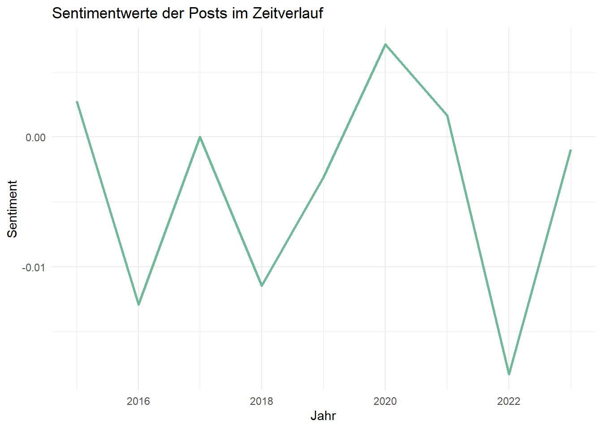
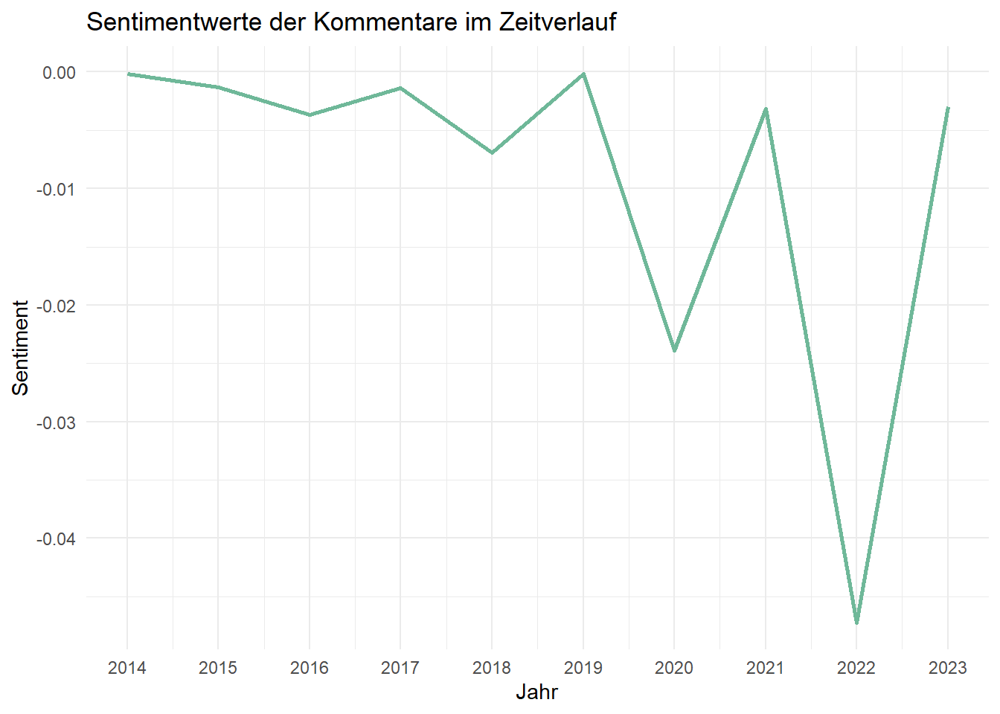
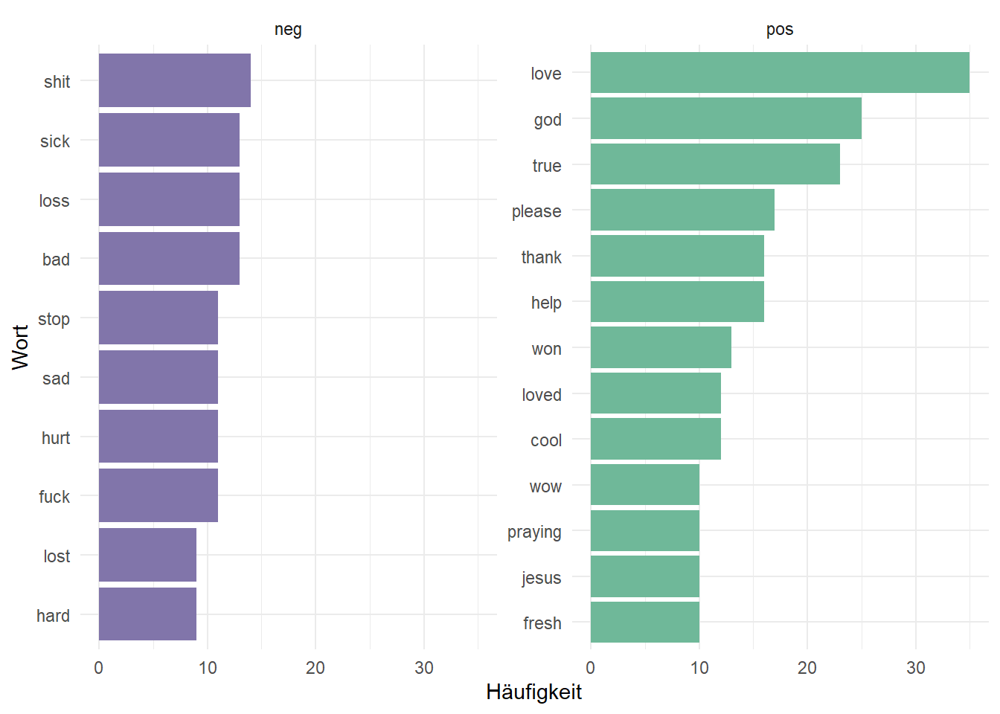
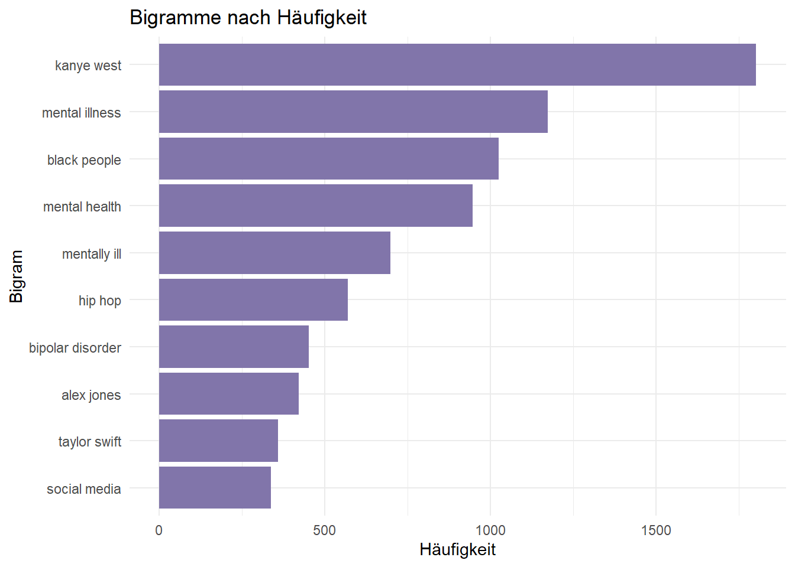
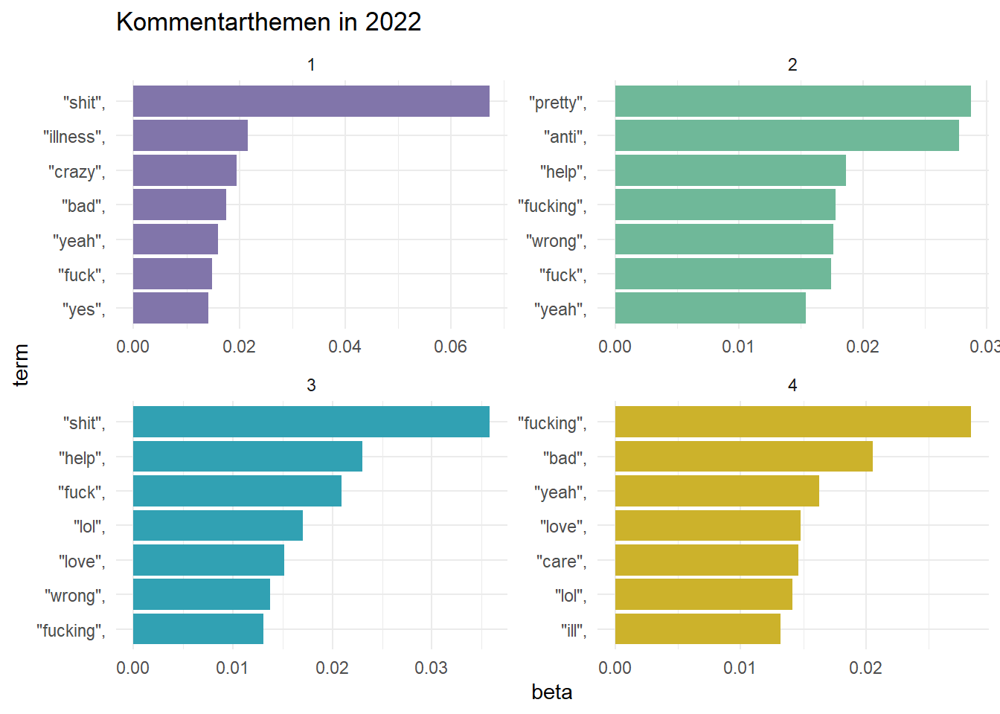
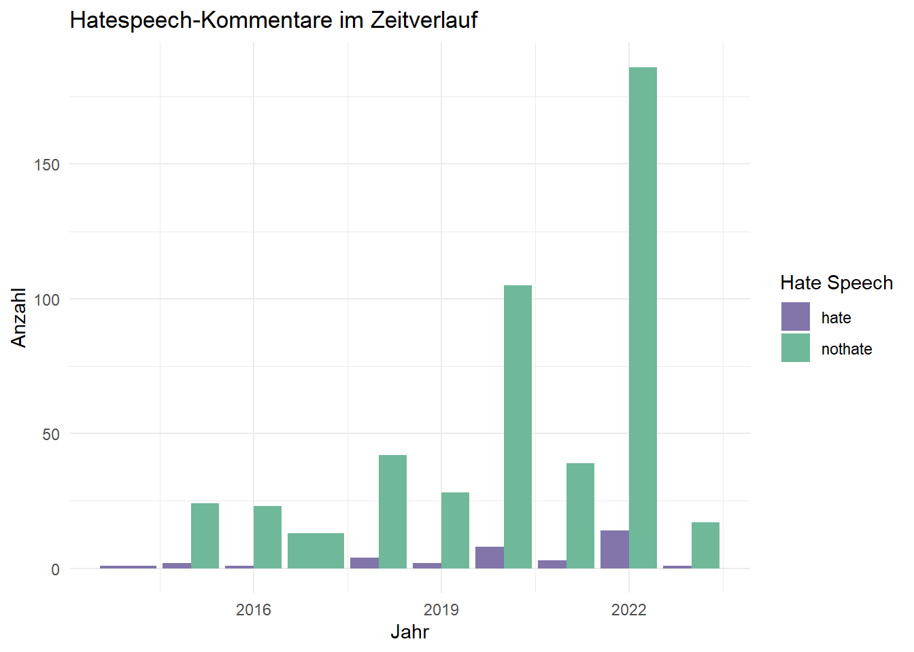

library(tokenizers)
library(tidyverse)
library(tidytext)
library(textdata)
library(ggthemes)
library(topicmodels)
library(tm)
library(stringr)
library(RedditExtractoR)
library(httr)Hate Speech auf Reddit
Ziel dieser Analyse ist es, die Reddit-Threads, deren ursprüngliche Posts das Stichwort “Kanye West” enthalten, in Bezug auf Sentiment, Schimpfwörter und Hate-Speech zu untersuchen. Hierbei ist vor allem die Veränderung der Sentimente der Posts im Zeitverlauf interessant. Dieser Post soll außerdem der Antwort auf die Frage näherkommen, ob die Nutzung der kostenlosen Reddit-API eine Alternative zur inzwischen kostenpflilchtigen Twitter-API darstellt, um Hate-Speech auf Social-Media-Plattformen zu analysieren. Der Post lässt sich grob in zwei Teile gliedern, nämlich wird zunächst die Analyse der Posts und Kommentare in Bezug auf Sentimente und Themen vorgenommen, woraufhin die Beiträge auf im zweiten Teil auf Hate Speech geprüft werden.
Analyse der Posts und Kommentare
Laden der Posts
Die Posts werden mit Hilfe des Pakets RedditExtractoR, welches die Reddit-API anspricht, extrahiert. Ich lade alle Posts, die das Keyword “Kanye West” enthalten (und innerhalb des Download-Limits sind). Dadurch dass ich das API Download-Limit für heute bereits erreicht habe, importiere ich die Posts und Kommentare als Csv-Datei.
posts <- find_thread_urls(
keywords = "Kanye West",
sort_by="top",
period = "all"
)
str(posts)posts <- read_csv("posts.csv")New names:
Rows: 228 Columns: 8
── Column specification
──────────────────────────────────────────────────────── Delimiter: "," chr
(5): ...1, title, text, subreddit, url dbl (2): timestamp, comments date (1):
date_utc
ℹ Use `spec()` to retrieve the full column specification for this data. ℹ
Specify the column types or set `show_col_types = FALSE` to quiet this message.
• `` -> `...1`Laden der Kommentare
Mit der Funktion get_thread_content() ist es möglich, bis zu 500 Kommentare zu einer Post-URL herunterzuladen. Um maximal 500 Kommentare zu allen n Posts herunterzuladen, wende ich eine Schleife an. Die Ausgabe ist dann eine Liste, die zwei Dataframes enthält. Ich extrahiere den Dataframe comments und speichere jeden Dataframe zu jeder URL in einer Liste ab. Manchmal kann es zu Problemen bei der Zusammenführung der Listenelemente zu einem Dataframe kommen, da die Spalte comment_id in manchen Fällen von der Standardfornatierung als Character abweicht und als Integer gespeichert wird. Dieses Problem löse ich, indem ich alle solche Spalten in Character umwandle. Zuletzt entferne ich noch sowohl alle entfernten und gelöschten Posts als auch Links und Zahlen.
comments_list <- list()
for (i in 1:nrow(posts)) {
comments <- get_thread_content(posts$url[i])$comments
comments_list[[i]] <- comments
}
umwandlung_character <- function(df) {
if ("comment_id" %in% names(df) && is.integer(df$comment_id)) {
df$comment_id <- as.character(df$comment_id)
}
return(df)
}
liste_dataframes_umgewandelt <- lapply(comments_list, umwandlung_character)
all_comments <- bind_rows(liste_dataframes_umgewandelt)
all_comments <- all_comments %>%
mutate(comment = str_remove_all(comment, pattern = 'http[s]?://\\S+|\\d+')) %>%
mutate(timestamp = as_datetime(timestamp, origin = "1970-01-01")) %>%
select(timestamp, comment, comment_id, url)
all_comments <- all_comments %>%
filter(!grepl("\\[deleted\\]|\\[removed\\]", comment))all_comments <- read_csv("all_comments.csv")New names:
Rows: 98044 Columns: 5
── Column specification
──────────────────────────────────────────────────────── Delimiter: "," chr
(3): comment, comment_id, url dbl (2): ...1, timestamp
ℹ Use `spec()` to retrieve the full column specification for this data. ℹ
Specify the column types or set `show_col_types = FALSE` to quiet this message.
• `` -> `...1`Im Folgenden werden die Kommentare und Posts einzeln betrachtet. Dies hat den Grund, dass Reddit-Posts tendenziell mehr aus sachlichen Inhalten bestehen, während die Kommentarsektion inhaltlich freier und dadaurch, dass sich dort noch einmal ganz eigene Themen entspinnen, nicht mit den Posts vergleichbar sind. Hinzu kommt, dass die Anzahl der Kommentare die der Posts um ein Vielfaches übersteigt, sodass diese separat analysiert werden sollten.
Tokenisierung
Im Folgenden wandle ich die Posts und Kommentare in Tokens um, entferne alle Links und Zahlen und wandle timestamp in ein Datumsobjekt um. Um alle Text-Inhalte der Posts zu erfassen, vereine ich die Titel der Posts mit den Posts, da es viele Posts gibt, deren Kernaussage im Titel steht, die durch ein Bild verdeutlicht wird.
poststoken <- posts %>%
unite(text, c(title, text)) %>%
mutate(text = str_remove_all(text, pattern = '"http[s]?://\\S+"|\\d+')) %>%
mutate(timestamp = as_datetime(timestamp, origin = "1970-01-01")) %>%
unnest_tokens(word, text)
nrow(poststoken)[1] 22897length(unique(poststoken$id))Warning: Unknown or uninitialised column: `id`.[1] 0commstoken <- all_comments %>%
mutate(timestamp = as_datetime(timestamp, origin = "1970-01-01")) %>%
unnest_tokens(word, comment)Entfernung der Stopwords
Nun werden alle Stopwords entfernt. Ich gehe davon aus, dass die Kommentare und Posts fast ausschließlich englischer Sprache sind. Für den Fall, dass sich im Datensatz jedoch sowohl deutsch- als auch englischsprachige Posts finden, kombiniere ich zwei Stopwords-Lexika (deutsch und englisch) zu einem.
data(stopwords_de, package = "lsa")
data(stopwords_en, package = "lsa")
stopwords_en <- tibble(word = stopwords_en)
stopwords_de <- tibble(word = stopwords_de)
stopwords <- bind_rows(stopwords_de, stopwords_en)poststoken <- poststoken %>%
anti_join(stopwords)Joining with `by = join_by(word)`nrow(poststoken)[1] 12280length(unique(poststoken$id))Warning: Unknown or uninitialised column: `id`.[1] 0commstoken <- commstoken %>%
anti_join(stopwords)Joining with `by = join_by(word)`Sentimentanalyse
Für die Sentimentanalyse gilt dasselbe wie für das Stopwords-Lexikon: Ich möchte, dass es zweisprachig ist. Die gewählten Lexika afinn und sentiws haben jedoch nicht dieselbe Skalierung, weshalb ich noch eine Min-Max-Normalisierung vornehme, um eine Vergleichbarkeit der deutschen und englischen Sentimentwerte zu gewährleisten.
senti_en <- get_sentiments("afinn") %>%
mutate(neg_pos = case_when(value > 0 ~ "pos",
TRUE ~ "neg"))
data(sentiws, package = "pradadata")
sentiws <- sentiws %>%
select(word, value, neg_pos)
min_max_normalize <- function(x, old_min, old_max, new_min, new_max) {
return (((x - old_min) / (old_max - old_min) * (new_max - new_min)) + new_min)
}
senti_en <- senti_en %>%
mutate(value = min_max_normalize(value, -5, 5, -1, 1))
senti <- bind_rows(sentiws, senti_en)poststoken_senti <- poststoken %>%
inner_join(senti)Joining with `by = join_by(word)`Warning in inner_join(., senti): Detected an unexpected many-to-many relationship between `x` and `y`.
ℹ Row 88 of `x` matches multiple rows in `y`.
ℹ Row 4591 of `y` matches multiple rows in `x`.
ℹ If a many-to-many relationship is expected, set `relationship =
"many-to-many"` to silence this warning.nrow(poststoken_senti)[1] 1269length(unique(poststoken_senti$timestamp))[1] 124commstoken_senti <- commstoken %>%
inner_join(senti)Joining with `by = join_by(word)`Warning in inner_join(., senti): Detected an unexpected many-to-many relationship between `x` and `y`.
ℹ Row 778 of `x` matches multiple rows in `y`.
ℹ Row 5008 of `y` matches multiple rows in `x`.
ℹ If a many-to-many relationship is expected, set `relationship =
"many-to-many"` to silence this warning.Berechnung des Sentiments pro Jahr
Zuletzt werden noch die Sentimentwerte aller Posts in einem Jahr zusammengefasst und mit der Anzahl der Posts gewichtet.
postssenti <- poststoken_senti %>%
mutate(year = year(timestamp)) %>%
group_by(year) %>%
summarize(value = mean(value),
postcount = length(unique((timestamp)))) %>%
mutate(sentiment = (value * postcount) / sum(postcount))
nrow(postssenti)[1] 9commssenti <- commstoken_senti %>%
mutate(year = year(timestamp)) %>%
group_by(year) %>%
summarize(value = mean(value),
postcount = length(unique((timestamp)))) %>%
mutate(sentiment = (value * postcount) / sum(postcount))
nrow(commssenti)[1] 10postssenti %>%
ggplot(aes(year, sentiment)) +
geom_line(linewidth = 1, colour = "#6fb899") +
labs(title = "Sentimentwerte der Posts im Zeitverlauf",
x = "Jahr",
y = "Sentiment") +
theme_minimal()
commssenti %>%
ggplot(aes(year, sentiment)) +
geom_line(linewidth = 1, colour = "#6fb899") +
scale_x_continuous(breaks = 2013:2024)+
labs(title = "Sentimentwerte der Kommentare im Zeitverlauf",
x = "Jahr",
y = "Sentiment") +
theme_minimal()
Die Sentimentwerte im Zeitverlauf sind überaus interessant. Auch wenn der Sentimentwert um den Nullbereich liegt, denke ich dennoch, dass er eine gewisse Aussagekraft hat. Gerade wenn er im Jahr 2022 sowohl bei den Posts als auch bei den Kommentaren rapide einbricht, um seinen absoluten Tiefpunkt zu erreichen, sollte man genauer hinsehen. Im Jahr 2022 stand es um die öffentliche Meinung zu Kanye West so schlecht wie noch nie zuvor. Durch ständige antisemitische Äußerungen, das Posten eines Hakenkreuzes und Tragen eines “White Lifes Matter”-Hoodies erreichte er die Sperrung seiner Social Media Accounts, die Kündigung der Kooperation mit Adidas und die Auslösung eines Shit-Storms in den sozialen Medien. Dieser Zusammenhang könnte obige Diagramme erklären.
Analyse der Sentimentwerte und -counts
poststoken_senti %>%
count(word, neg_pos, sort = TRUE) %>%
ungroup() %>%
group_by(neg_pos) %>%
slice_max(n, n = 10)%>%
ungroup() %>%
mutate(word = reorder(word, n)) %>%
ggplot(aes(n, word, fill = neg_pos)) +
geom_col(show.legend = FALSE) +
facet_wrap(~neg_pos, scales = "free_y") +
labs(x = "Häufigkeit",
y = "Wort") +
theme_minimal() +
scale_fill_tableau(palette = "Nuriel Stone")
Die häufigsten positiven Wörter sind insofern interessant, als sie den Themen des christlichen Glaubens widerspiegeln. Denn Kanye West bekennt sich regelmäßig in Interviews und Tweets zum Christentum. Inwiefern seine antisemitschen Äußerungen mit diesem Glauben vereinbar sind, sei mal dahingestellt.
comms_bigram <-
all_comments %>%
unnest_tokens(bigram, comment, token = "ngrams", n = 2) %>%
filter(!is.na(bigram))
comms_bigram <- comms_bigram %>%
separate(bigram, c("word1", "word2"), sep = " ")%>%
filter(!word1 %in% stop_words$word) %>%
filter(!word2 %in% stop_words$word)
comms_bigram %>%
unite(bigram, word1, word2, sep = " ") %>%
count(bigram, sort = TRUE) %>%
slice_max(n, n = 10)%>%
mutate(bigram = reorder(bigram, n)) %>%
ggplot(aes(n, bigram)) +
geom_col(fill = "#8175aa") +
labs(title = "Bigramme nach Häufigkeit",
x = "Häufigkeit",
y = "Bigram") +
theme_minimal()
Interessant ist bei der Betrachtung der häufigsten Bigramme, die in den Kommentaren vorkommen, wie präsent das Thema der psychischen Störungen ist. Die Mutmaßung, dass in den Kommentaren über Kanye Wests mentale Gesundheit diskutiert wird, ist nicht unplausibel.
Themenanalyse
posts_dtm2 <- commstoken_senti %>%
mutate(timestamp = as_datetime(timestamp),
year = year(timestamp)) %>%
filter(year == 2022) %>%
select(word) %>%
DocumentTermMatrix(commstoken_senti)Warning: Unknown or uninitialised column: `tokenize`.Warning: Unknown or uninitialised column: `tolower`.Warning: Unknown or uninitialised column: `stopwords`.
Unknown or uninitialised column: `stopwords`.Warning: Unknown or uninitialised column: `dictionary`.Warning: Unknown or uninitialised column: `bounds`.Warning: Unknown or uninitialised column: `wordLengths`.Warning: Unknown or uninitialised column: `removePunctuation`.Warning: Unknown or uninitialised column: `removeNumbers`.Warning: Unknown or uninitialised column: `stemming`.Warning: Unknown or uninitialised column: `bounds`.Warning: Unknown or uninitialised column: `weighting`.posts_lda2 <- LDA(posts_dtm2, k = 4, control = list(seed = 42))
posts_themen2 <- tidy(posts_lda2, matrix = "beta")
posts_themen2 <- posts_themen2 %>%
group_by(topic) %>%
slice_max(beta, n = 7) %>%
ungroup() %>%
arrange(topic, -beta)
posts_themen2 %>%
mutate(term = reorder_within(term, beta, topic)) %>%
ggplot(aes(beta, term, fill = factor(topic))) +
geom_col(show.legend = FALSE) +
facet_wrap(~ topic, scales = "free") +
scale_y_reordered() +
labs(title = "Kommentarthemen in 2022 ") +
theme_minimal() +
scale_fill_tableau("Nuriel Stone")
Die Analyse der Kommentarthemen des Jahres 2022 deuten ebenfalls auf Kanye Wests Äußerungen hin, da im ersten Thema dem Wort “hitler” eine gewisse Bedeutung zugeordnet wird.
Klassifikation von Hate Speech
Gerade in Zusammenhang mit konktroversen Themen und Personen ist die Analyse von Hate Speech in den sozialen Medien relevant. In Bezug auf die Kommentare zu Kanye West Posts ist es denke ich sehr interessant zu sehen, welcher Anteil der Kommentare als Hate Speech gilt. Für die Vorhersage wende ich Zero-Shot-Klassifikation mit Hilfe des vortrainierten Large Language Modells LFTW R4 Target von facebook an, welches ich über das Modul transformers von Huggingface anspreche, an.
Vorbereitung
Zunächst lade ich alle erforderlichen Module sowie das Modell. Der Code zur Verwendung des pipeline-Befehls wird hilfreicherweise von Huggingface bereitgestellt.
library(reticulate)Warning: package 'reticulate' was built under R version 4.2.3use_virtualenv("C:/Users/rapha/venv")import pandas as pd
import tensorflow as tfWARNING:tensorflow:From C:\Users\rapha\venv\Lib\site-packages\keras\src\losses.py:2976: The name tf.losses.sparse_softmax_cross_entropy is deprecated. Please use tf.compat.v1.losses.sparse_softmax_cross_entropy instead.from transformers import pipeline
classifier = pipeline("text-classification", model="facebook/roberta-hate-speech-dynabench-r4-target")WARNING:tensorflow:From C:\Users\rapha\venv\Lib\site-packages\keras\src\backend.py:873: The name tf.get_default_graph is deprecated. Please use tf.compat.v1.get_default_graph instead.
Some weights of the PyTorch model were not used when initializing the TF 2.0 model TFRobertaForSequenceClassification: ['roberta.embeddings.position_ids']
- This IS expected if you are initializing TFRobertaForSequenceClassification from a PyTorch model trained on another task or with another architecture (e.g. initializing a TFBertForSequenceClassification model from a BertForPreTraining model).
- This IS NOT expected if you are initializing TFRobertaForSequenceClassification from a PyTorch model that you expect to be exactly identical (e.g. initializing a TFBertForSequenceClassification model from a BertForSequenceClassification model).
All the weights of TFRobertaForSequenceClassification were initialized from the PyTorch model.
If your task is similar to the task the model of the checkpoint was trained on, you can already use TFRobertaForSequenceClassification for predictions without further training.Anwendung
Für die Klassifikation von Hate-Speech ziehe ich aus allen Kommentaren eine zufällige Stichprobe, da RoBERTa nur eine Maximallänge von 513 Inputs akzeptiert.
set.seed(123)
comments_sample <- all_comments %>%
sample_n(size = 513, replace = FALSE)
comments_short <- comments_sample$commentNun lade ich die Kommentare der Stichprobe in das Modell.
comments = r.comments_short
result = classifier(comments)Anschließend füge ich der Stichprobe das Ergebnis der Klassifikation als neue Spalte hinzu.
result <- py$result
labels <- lapply(result, function(element) element$label)
comments_hate <- cbind(comments_sample, hatespeech = unlist(labels)) %>%
select(timestamp, comment, hatespeech, comment_id, url)Analyse
Im Folgenden untersuche ich die als Hate Speech klassifizierten Kommentare etwas näher, indem ich den Anteil der Hate Speech im Jahresverlauf sowie den Zusammenhang mit negativem Sentiment betrachte.
comments_hate %>%
count(hatespeech == "hate")comments_hate %>%
mutate(timestamp = as_datetime(timestamp, origin = "1970-01-01"),
year = year(timestamp)) %>%
group_by(year, hatespeech) %>%
count() %>%
ggplot(aes(x = year, y = n, fill = hatespeech)) +
geom_bar(stat = "identity", position = "dodge") +
labs(title = "Hatespeech-Kommentare im Zeitverlauf",
x = "Jahr",
y = "Anzahl",
fill = "Hate Speech") +
scale_fill_tableau("Nuriel Stone") +
theme_minimal()
Auch wenn nur ein winziger Teil der Kommentare als Hate Speech klassifiziert wurde, ist in diesem Diagramm erkennbar, dass wieder im Jahr 2022 mit Abstand die meiste Hassrede auftrat.
commstokensenti_hate <- comments_hate %>%
filter(hatespeech == "hate") %>%
unnest_tokens(word, comment) %>%
inner_join(senti)Joining with `by = join_by(word)`Warning in inner_join(., senti): Detected an unexpected many-to-many relationship between `x` and `y`.
ℹ Row 541 of `x` matches multiple rows in `y`.
ℹ Row 4906 of `y` matches multiple rows in `x`.
ℹ If a many-to-many relationship is expected, set `relationship =
"many-to-many"` to silence this warning.commstokensenti_hate %>%
summarise(mean(neg_pos == "neg"))comments_hate %>%
filter(hatespeech == "hate") %>%
select(comment)Nur die Hälfte der als Hassrede klassifizierten Kommentare haben ein negatives Sentiment. Außerdem halte ich persönlich Sätze wie “You are an old one.” nicht für Hate Speech. In Kombination mit dem Fakt, dass nur 34 von 513 Tweets als Hate Speech erkannt wurden, lassen mich diese Ergebnisse vermuten, dass das Modell nicht allzu zuverlässige Vorhersagen macht.
Fazit
Es lässt sich sagen, dass die Analyse durchaus interessante Erkenntnisse hervorgebracht hat. Die Sentimentwerte können in einen klaren Zusammenhang mit dem Verhalten Kanye Wests gesetzt werden. Allerdings unterliegen diese Erkenntnisse starken Limitationen. Zum einen ist die Anzahl der verwertbaren Posts verschwindend gering, was die Aussagekraft der Analyse dieser beeinträchtigt. Deshalb lag das Augenmerk auch stärker auf den Kommentaren. Die Schwankungen in den Sentimentwerten beeinträchtigen ebenfalls die Aussagekraft der gewonnenen Erkenntnisse, da diese infinitesimal klein ausfallen. Die Klassifikationen des RoBERTa-Modells halte ich ebenfalls für stark ausbaufähig. Es wäre sinnvoll, in weiteren Analysen noch andere Large Language Modelle für diese Aufgabe auszuprobieren. Ziel der Analyse war es jedoch auch, zu sehen, ob Redditposts ähnlich interessant für die Analyse von Social-Media-Foren sind wie Tweets. Diese Frage ist auf jeden Fall mit Ja zu beantworten, zum einen aufgrund der leichten Zugänglichkeit und zum anderen aufgrund des regen Themenaustausches in den Threads, wie er hier beobachtet wurde.